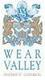

From Time to Time
An Artist’s Residency at: Killhope - the North of England Lead Mining Museum, May 2008 - May 2009
“I’m driving up the Al - in limbo between two locations - home in suburban West Yorkshire and what might become almost another home in Upper Weardale - a remote valley high in the North Pennines of County Durham. It is a transition from familiar comforts and reassurances to the uncertainty and confusion of a new role in unfamiliar surroundings. It seems a significant step between two very different places. I feel excitement, exhilaration and apprehension in roughly equal measure.”
JF, Diary entry, 18 February 2008.
“Hail, then snow, then both together as, confronting a bitingly cold north wind, I make my way up a moorland track between two disused fluorite mines. I wonder how and where to start. In my rucksack are packed sketchbook, paints, pens and pencils, geological hammer, map, camera, sound recorder, plastic bags to collect things in, a small plastic trowel and, presumably, somewhere, some sealing wax and an indeterminate length of string. The scale of this miscellany reflects a frenzied, if somewhat unfocused, enthusiasm.”
JF, Diary entry, 19 February 2008.

{kind=link}
{kind=link}
{kind=link}
{kind=link}
{kind=link}
{kind=link}
{kind=link}
{kind=link}
{kind=link}
{kind=link}
{kind=link}
{kind=link}
{kind=link}
{kind=link}
The Residency at Killhope involved the artist being in Weardale for about three days roughly every fortnight. Staying at Cowshill, a couple of miles down the valley, she spent time both around the Museum, where she had a portakabin to work in, and in the surrounding landscape.
The main components of the Residency were:
- producing work at Killhope both in the Portakabin and in the grounds.
- exploring the historic mining landscape.
- delivering interpretive and outreach work at the Museum and in local schools.
Jane‘s work on this project has inspired ‘Framing Time’, an AV piece made by photographer Alex Sawyer and sound artist Phil Ogg with Steven Kelly, during one of the artist’s workshops at Killhope Lead Mining Museum
The Residency received financial support from Durham County Council (who subsidised this section of the website and a small publication), The North Pennines AONB Partnership, Wear Valley District Council and a variety of local small businesses.
Sponsored by:


Photography: On site - Alex Sawyer. Finished work - Catherine Kerr and Tony May.